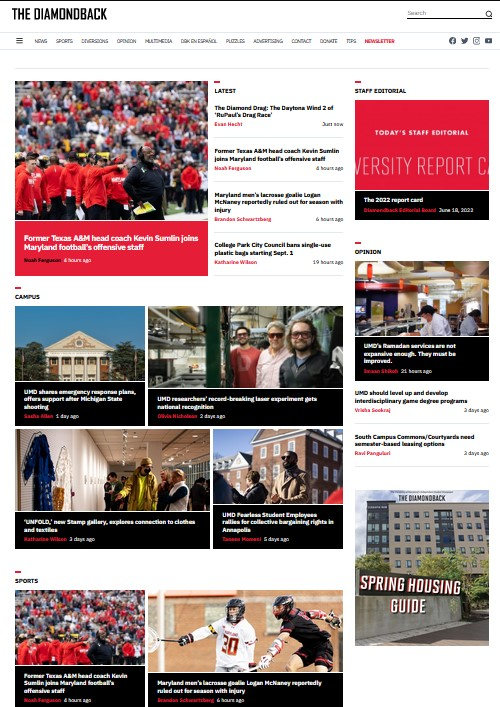

The Diamondback
The Diamondback is an independent student newspaper associated with the University of Maryland, College Park. It began in 1910 as The Triangle and became known as The Diamondback in 1921. Now a weekly online journal, The Diamondback was published as a daily print newspaper on weekdays until 2013. It is published by Maryland Media, Inc., a non-profit organization. The newspaper receives no university funding and derives its revenue from advertising.
History
The Diamondback was founded in 1910 as The Triangle. The name was then changed a few times to The M.A.C. Weekly, Maryland State Review, and University Review. The newspaper was renamed again in 1921 to The Diamondback, in honor of a local reptile, the Diamondback terrapin (the terrapin became the official school mascot in 1933). In the 1930s, the newspaper was printed weekly, increasing to five times per week by the 1950s and distributed for free at various campus locations, until the Friday edition was eliminated in 2013. In 2015, the four days per week publication was reduced to a weekly print edition. The change mirrored a nationwide trend in student newspapers at U.S. universities in the 2010s, such as at the University of Wisconsin, University of Nebraska, and Arizona State, where daily print editions were dropped as readers increasingly gravitated towards social media and online news sources. In March, 2020, the print edition of the newspaper was discontinued altogether. By then, it was published once a week on Monday, with a print circulation of 8,000, down from a high of more than 21,000, and what used to be annual advertising revenues of more than $1 million. It was usually twelve to sixteen pages.
Over the years, the newspaper has been noted for its willingness to challenge authority. In 1935, The Diamondback sharply criticized then-University President Raymond A. Pearson, saying in an editorial that faculty morale was deteriorating following salary cuts and the departure of highly regarded professors had resulted in lowered academic standing. In response, the Board of Regents formed a special committee for a "full investigation". Pearson defended the salary cuts as due to reduced state funding attributable to the Depression and denied that scholastic excellence had been impaired. Pearson subsequently resigned.
In a November, 1940, editorial written in the wake of a disappointing football season, the Diamondback called for the university to provide football scholarships. Saying that state universities "cannot afford not to have a good football team", the editorial added, "the boys who play college football deserve financial aid where they need it. They work hard enough in the course of a season to qualify for pay on a full time job".
In 1972, the Board of Regents granted Maryland Media Inc. a non-profit charter and free office space on campus, under which the Diamondback operates independently. The newspaper receives no university funding and derives its revenue from advertising.
In 1996, the Diamondback was described by Maryland's largest newspaper, The Baltimore Sun, as having a "hard-edged reputation", especially when compared to student newspapers at other colleges in the state. In 2001, a controversy erupted between The Diamondback and the university's journalism school when the Diamondback's student staff objected to the Dean of Journalism's proposal that publisher Maryland Media hire a paid editorial advisor for the newsroom, accusing the Dean of a "takeover" that would jeopardize the newspaper's independence. The month before, the Baltimore Sun reported that Maryland Media had a $4 million surplus, with the Diamondback's non-student manager paid $179,123 and potentially earning as much as $300,000 per year, further exacerbating relations.
As of 2022, The Diamondback publishes a daily digital-only edition during the school year at dbknews.com. It has been independently published since 1972 by Maryland Media, a non-profit corporation. The paper's offices are located on the third floor of the South Campus Dining Hall, across from the WMUC-FM radio station and the University of Maryland's Residence Hall Association office. As of September 2019, the newspaper's editor said that The Diamondback's website had 160,000 visitors for the month.
Sections
The Diamondback is split into four sections:
- News - The news section covers both on- and off-campus news, specifically in the region of College Park, Maryland, but also expands coverage to Annapolis, Maryland, when the state's legislature is in session.
- Opinion - The editorial section contains The Diamondback's editorial, op-eds and letters to the editor, and editorial cartoons.
- Diversions - The entertainment section contains reviews of movies and music, as well as concerts and plays around the College Park region.
- Sports - The sports section covers University of Maryland athletics, including men's basketball and football. This section often has a combination of news and opinion articles.
Awards
The Diamondback has received many awards throughout its history for categories including photography, news writing and cartoons, especially from the Society of Professional Journalists. In 1949, it was named the "Best College Newspaper" among schools having more than 6,000 students by Pi Delta Epsilon, the national honorary journalism fraternity (now the Society for Collegiate Journalists).
For the 2012–2013, 2015 and 2016 school years, The Diamondback was named the "Best All-Around Daily Student Newspaper" in Region 2 by the Society of Professional Journalists.
For the 2010–2011 school year, The Diamondback received a first-place "Mark of Excellence" award for its region, and saw several of its journalists go on to win individual national awards from the Society of Professional Journalists, including for column writing and sports reporting.
For the 2008–2009 school year, The Diamondback placed second in the national Society of Professional Journalists Mark of Excellence Awards ranking of daily student newspapers. It received the first-place award for its region.
For the 2005–2006 school year, The Diamondback received a "Mark of Excellence" award, placing 3rd nationally for "Best All-Around Daily Student Newspaper" and placing first in its region in the same category.
Alumni
Journalists
Notable journalists who worked at The Diamondback include:
- Jayson Blair (editor-in-chief in 1996), former journalist for The New York Times. Blair achieved nationwide notoriety as a journalist at the Times for serious reporting errors, fabrication of facts, and plagiarism. A letter signed by 30 former Diamondback staffers regarding the situation with Blair also complained about the lack of involvement by the board that owns the paper.
- Norman Chad (editor-in-chief in 1978), an ESPN columnist and World Series of Poker commentator.
- Brian Crecente (reporter 1993–1994), editor-in-chief of Gawker Media website Kotaku named one of the 20 most influential people in the video game industry over the past 20 years.
- Jack Kelley, former USA Today international correspondent who resigned after fabricating major stories and plagiarizing on at least two dozen occasions.
- David Mills, a former features writer for The Washington Times and The Washington Post. Mills also found success in Hollywood. He was a television writer for NYPD Blue from 1995 to 1997. He also wrote several episodes of Homicide: Life on the Street and ER. In 2003, he created Kingpin, an NBC miniseries. He won two Emmy Awards.
- Michael Olesker, former columnist for the Baltimore Sun, commentator for WJZ-TV and writer for the Baltimore Examiner. He resigned from the Sun after accusations of plagiarism.
- David Simon, author of Homicide: A Year on the Killing Streets and The Corner. Based on his books, Simon later created the TV series Homicide: Life on the Street and The Wire, as well as the mini-series, The Corner.
- Mi-Ai Parrish (editor-in-chief 1991–1992) is president and publisher of The Arizona Republic and azcentral.com. Previously publisher of The Kansas City Star and Idaho Statesman. Journalist at Minneapolis Star Tribune, San Francisco Chronicle, Chicago Sun-Times.
- Stephen Petranek, American writer and editor.
Cartoonists
- Frank Cho's strip Liberty Meadows started as a cartoon strip called University for The Diamondback.
- Aaron McGruder's comic strip The Boondocks first premiered in The Diamondback in 1997. The comic has since gone on to widespread success in syndication, and has its own television show.